20 Are swimmers swimming faster?
“Swimming could be taught by lecturing the student swimmers in the classroom three times a week on the various kinds of strokes and the principles of buoyancy and so forth. Some might believe that on completing such a course of study, the graduates would all eagerly run down to the pool, jump in, and swim at once. But I think it’s much more likely that they would want to stay in the classroom to teach a fresh lot of students all that they had learned.”
Background Comparing swimmers’ best times for different strokes and distances.
Questions Which strokes are swum fastest? How much faster are men than women? What effect did full body swimsuits have?
Sources Website of the International Swimming Federation (FINA (2021))
Structure 7685 observations of 23 variables
20.1 Best times for different strokes
The website of the International Swimming Federation (FINA (2021)) publishes results of competitions and datasets containing swimmers’ best times for different strokes and distances. Spearing et al. (2021) used some of this data to compare the performances of swimmers over time and across events using a model based on extreme value theory. They also assessed which world records were most likely to be broken next. As the data are best times for individual swimmers, each swimmer can only appear once in the list for an event. The data used here include the 200 best times for men and women over each of 17 events for individuals, with fewer best times for three relay events. All times are in seconds and have been rounded to two decimal places. Only races in 50 metre pools (long course metres or LCM events) are considered here.
Figure 20.1 is a display of best times by date for an event, in this case the 100 m freestyle for men. Most of the best times have been achieved recently, partly because training methods have improved, partly because there are more swimmers, and partly because more competitions are included on the FINA website. There are a few impressive older performances. It looks like there is an upper limit of just over 22.2 seconds and this must have been the 200th best performance. The very best times were achieved after the introduction of full body swimsuits in 2008 that were permitted at the Beijing Olympics. The suits were banned from 1st January 2010 (marked by a red vertical line).
Code
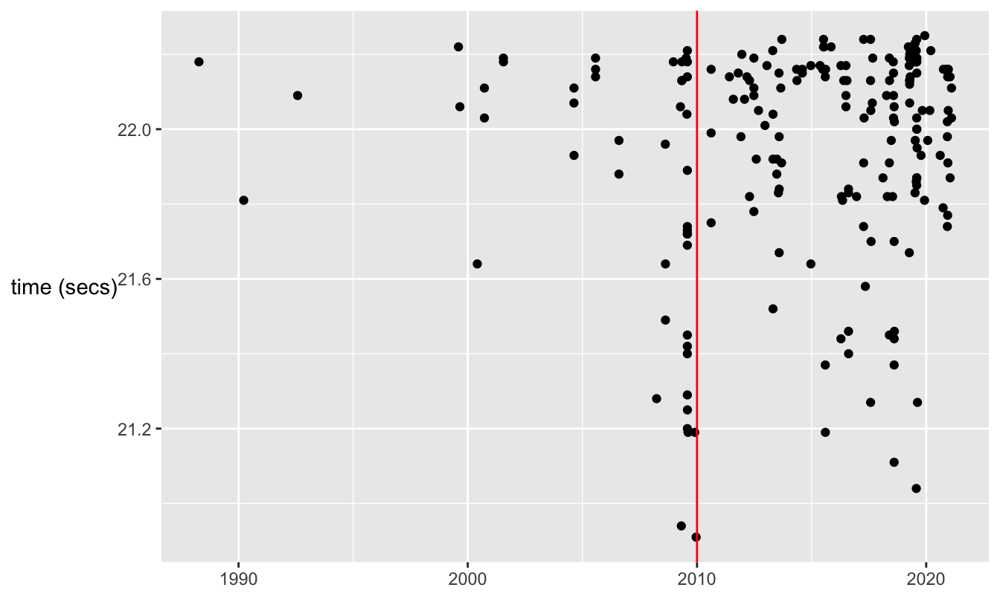
Figure 20.1: Best times by male swimmers for the 100 m freestyle
There are four different events over 50 m: freestyle, breaststroke, butterfly, and backstroke. Plotting the sets of 200 best times for men all in the same display presents a striking picture (Figure 20.2).
Code
All200 <- All200 %>% mutate(Style=factor(style, levels=c("Breaststroke", "Backstroke", "Butterfly", "Freestyle", "Medley", "Medley Relay", "Freestyle Relay")))
swM5x <- ggplot(All200 %>% filter(dist==50, Gender=="Men"), aes(sdate, SwimTime)) + geom_point(aes(colour=Style)) + xlab(NULL) + ylab("time (secs)") + theme(legend.title=element_blank(), axis.title.y=element_text(angle=0, vjust=0.5, hjust=0))
swM5x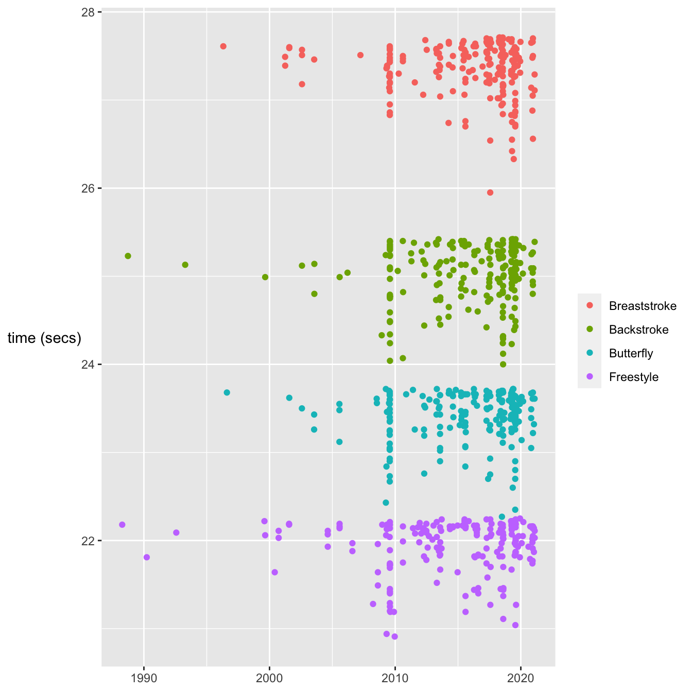
Figure 20.2: Best times by male swimmers for the four 50 m events
The times for the events are almost completely separated. There is a possible overlap between the fastest butterfly time and the slowest freestyle times. In fact the best time for the butterfly was 22.27 seconds and the two-hundredth best time for the freestyle was 22.25 seconds. Three of the four plots have the same patterns seen in Figure 20.1, a few fine older performances, a string of best times with full body swimsuits in 2009, and a gradual improvement over the past 10 years from the slower times recorded in 2010. There are two exceptions. One is the 50 m backstroke time of Camille Lacourt in 2010. The other is the extraordinary time of Adam Peaty in the 50 m breaststroke in 2017. Unlike in the other events, several breaststroke swimmers have beaten the best full body swimsuit time. Was it of less benefit to breaststroke swimmers?
The ordering of the events is hardly surprising to swimmers. Backstroke swimmers start in the water, while swimmers in the other three events have the advantage of diving in and swimming briefly underwater at the start. The butterfly is a relatively new stroke in official terms. It was introduced before the Second World War and was later used by swimmers in breaststroke competitions. In the early 1950s the best breaststroke times were swum by butterfly swimmers and the butterfly was declared a separate stroke in 1953 (Oppenheim (1970)). This is why the breaststroke world record times increased then, as afterwards breaststroke swimmers had to actually swim breaststroke!
The same patterns hold for the women for the 50 m events with one notable exception. Figure 20.3 shows that the women are in general slower than the men (although the best women swimming freestyle would beat the best male breaststroke swimmers and probably the best male backstroke swimmers too).
Code
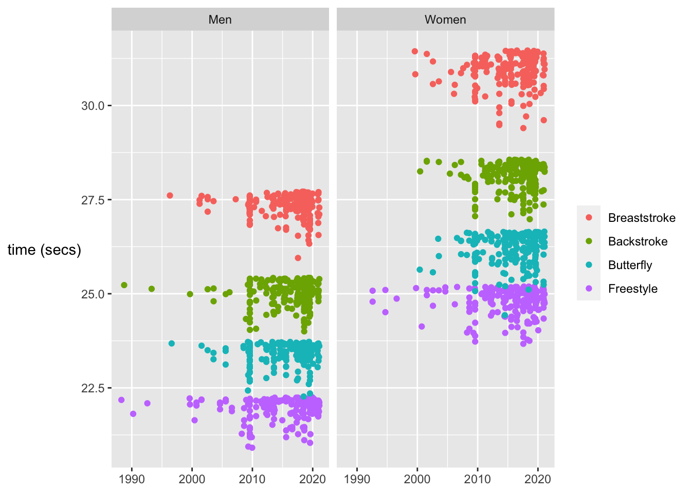
Figure 20.3: Best times for the four 50 m events achieved by men and women
The graphic suggests an overlap between female butterfly and freestyle swimmers that was suspected but not confirmed amongst the males. Drawing only the times for women as boxplots in Figure 20.4 provides confirmation. Sarah Sjöström swam an incredible time for the butterfly of 24.43 seconds in the 2014 Swedish Championships. The asymmetric pattern of the boxplots is to be expected, distributions of best times are skewed to the left.
Code
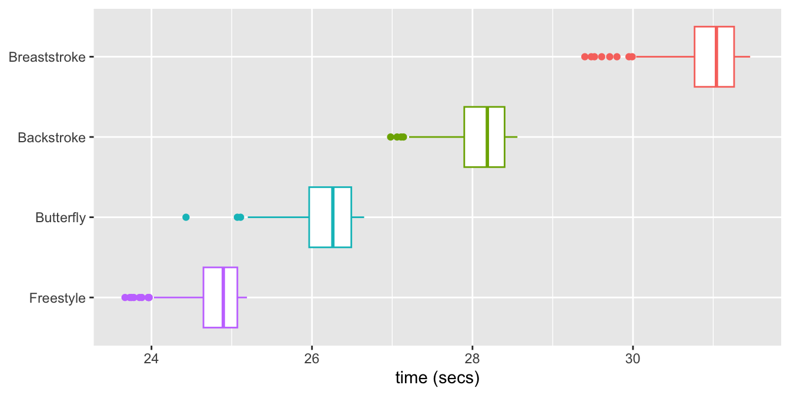
Figure 20.4: Boxplots of the best times by women for the four 50 m events
Do the same patterns apply for the longer standard distances of 100 m and 200 m? It turns out that the separations between the four strokes increase for both sexes, except for backstroke and butterfly where there is increasing overlap. Figure 20.5 shows this for the 200 m events.
Code
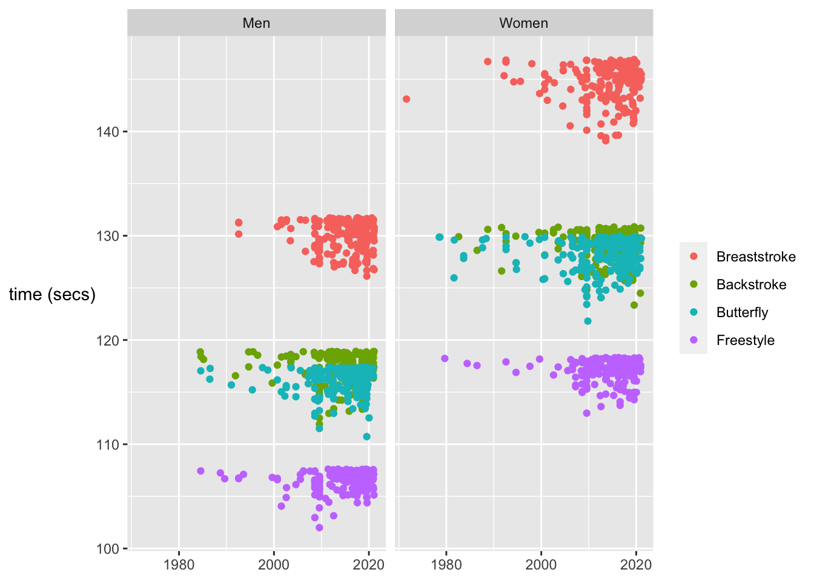
Figure 20.5: Best times for the four 200 m events achieved by men and women
The 200 m LCM races include three turns and the turn rules are different for the four strokes. In particular, breaststroke and butterfly swimmers must touch the end with both hands at the same time, while freestyle and backstroke swimmers can touch the end with any part of their body. This explains at least partly why backstroke times catch up on butterfly times.
One point stands out in Figure 20.5, the superb pre-1980 time in the women’s 200 m breaststroke. Checking with the results for the 1971 6th Pan American games on the web revealed that Lynn Colella won both the 200 m breaststroke and the 200 m butterfly, but the FINA database recorded her butterfly time as a breaststroke time. Looking at the differences between the butterfly and breaststroke times overall, it is clear that there would be no traditional breaststroke swimmers in competitions any more had the butterfly not been declared a separate stroke.
The performances of men and women can be compared by plotting the time differences between the swimmers of the same rank order for an event. Figure 20.6 shows this for the four 100 m events.
Code
All200dif <- All200 %>% pivot_wider(names_from=Gender, values_from=SwimTime, id_cols=c(Style, dist, Rank_Order)) %>% mutate(wm=Women-Men)
ggplot(All200dif %>% filter(dist==100), aes(Rank_Order, wm, colour=Style)) + geom_line(aes(colour=Style)) + theme(legend.title=element_blank(), axis.title.y = element_text(angle = 0, vjust = 0.5)) + ylab("difference (secs)")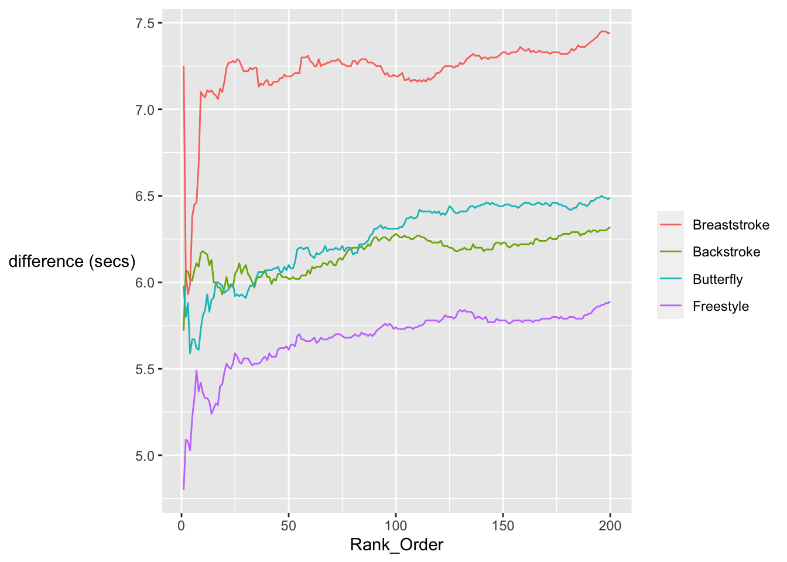
Figure 20.6: Time differences between men and women for the four 100 m events by rank
The display suggests that the very best women are a bit closer to the very best men in time and that the difference between the sexes increases as ranking increases. The big exception to this is the breaststroke, due to Adam Peaty’s 2019 world record of 56.88 seconds. In general, differences between equal ranks increase if one group is bigger than the other.
Differences in times between events are affected by the popularity of the events amongst the swimmers. This can be seen, for instance, in the numbers of swimmers taking part in the heats for the events at the 2019 World Championships (FINA (2021)). There were 41 in the men’s 4x100 m medley and 134 in the men’s 50 m freestyle. The corresponding numbers for the women were 26 and 106.
20.2 How good are the best swimmers across multiple events?
A few swimmers compete at the top level in more than one event. The outstanding example in this dataset is Katinka Hosszu, whose best time is amongst the top 200 in 14 events. Figure 20.7 shows her results as purple dots on top of letter-value boxplots (Hofmann et al. (2017)) for the 200 best times in the 17 events for women. The events have been sorted by stroke and ordered by distance. Each plot has its own time scale.
Code
All200x <- All200 %>% filter(!distance %in% c("4x100", "4x200"))
All200y <- All200x %>% group_by(full_name_computed) %>% mutate(app=n()) %>% ungroup()
All200y <- All200y %>% unite(Styledist, c("Style", "dist"), remove=FALSE) %>% mutate(yz=1, Styledist=factor(Styledist, levels=c("Backstroke_50", "Backstroke_100", "Backstroke_200", "Breaststroke_50", "Breaststroke_100", "Breaststroke_200", "Butterfly_50", "Butterfly_100", "Butterfly_200", "Freestyle_50", "Freestyle_100", "Freestyle_200", "Freestyle_400", "Freestyle_800", "Freestyle_1500", "Medley_200", "Medley_400")))
KHa <- ggplot(All200y %>% filter(Gender=="Women"), aes(yz, SwimTime)) + geom_lv(outlier.colour="grey80", colour="grey80", fill="grey80") + geom_point(data=All200y %>% filter(Gender=="Women", full_name_computed=="HOSSZU, Katinka"), aes(yz, SwimTime), colour="purple2", size=4) + facet_wrap(vars(Styledist), scales="free", nrow=1) + xlab(NULL) + ylab(NULL) + theme(axis.text.x=element_blank(), axis.ticks=element_blank(), axis.text.y=element_blank(), strip.text.x = element_text(angle=-75))
KHa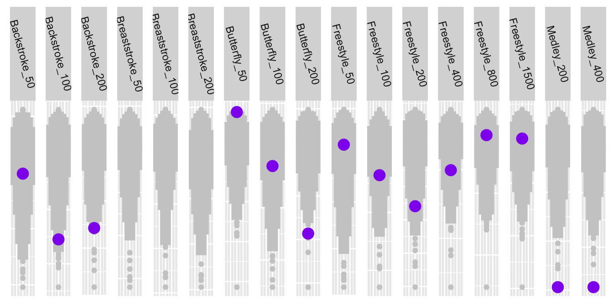
Figure 20.7: Katinka Hosszu’s best times by event (in purple) compared with the 200 best in each event
Given that she is good at so many events, it is perhaps not surprising that she is the best overall in the two medley events. Her ‘weakest’ stroke is the breaststroke, the only events where she is not in the top 200.
The most versatile male swimmer in the dataset, Michael Phelps, is also strong in the two medley events, as can be seen in Figure 20.8. He is amongst the best in 10 of the 17 individual events for men.
Code
ggplot(All200y %>% filter(Gender=="Men"), aes(yz, SwimTime)) + geom_lv(outlier.colour="grey80", colour="grey80", fill="grey80") + geom_point(data=All200y %>% filter(Gender=="Men", full_name_computed=="PHELPS, Michael"), aes(yz, SwimTime), colour="springgreen3", size=4) + facet_wrap(vars(Styledist), scales="free", nrow=1) + xlab(NULL) + ylab(NULL) + theme(axis.text.x=element_blank(), axis.ticks=element_blank(), axis.text.y=element_blank(), strip.text.x = element_text(angle=-75))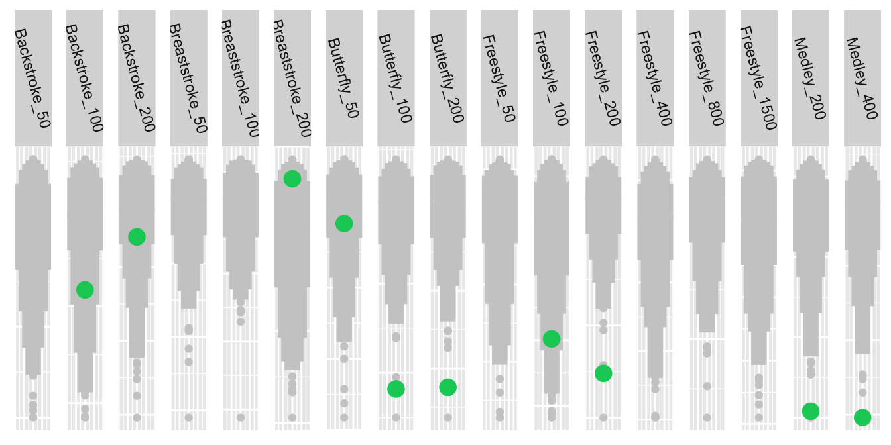
Figure 20.8: Michael Phelps’s best times by event (in green) compared with the 200 best in each event
20.3 Comparing events graphically
Another way of comparing events is to plot the times standardised by event by rank in a parallel coordinate plot. Figure 20.9 shows this for the 34 individual events, where the 200 times for each event have been standardised on a [0,1] scale.
Code
All200p <- All200x %>% unite("event", c("Gender", "distance", "Style"))
All200p <- All200p %>% select(event, SwimTime, Rank_Order)
All200px <- All200p %>% pivot_wider(names_from=event, values_from=SwimTime)
All200px %>% pcp_select(Women_50_Freestyle:Men_400_Medley) %>% pcp_scale(method="uniminmax") %>% ggplot(aes_pcp()) + geom_pcp_axes(colour="white") + geom_pcp(alpha=0.25) + ylab(NULL) + xlab(NULL) + theme(axis.text.x = element_blank()) + coord_flip()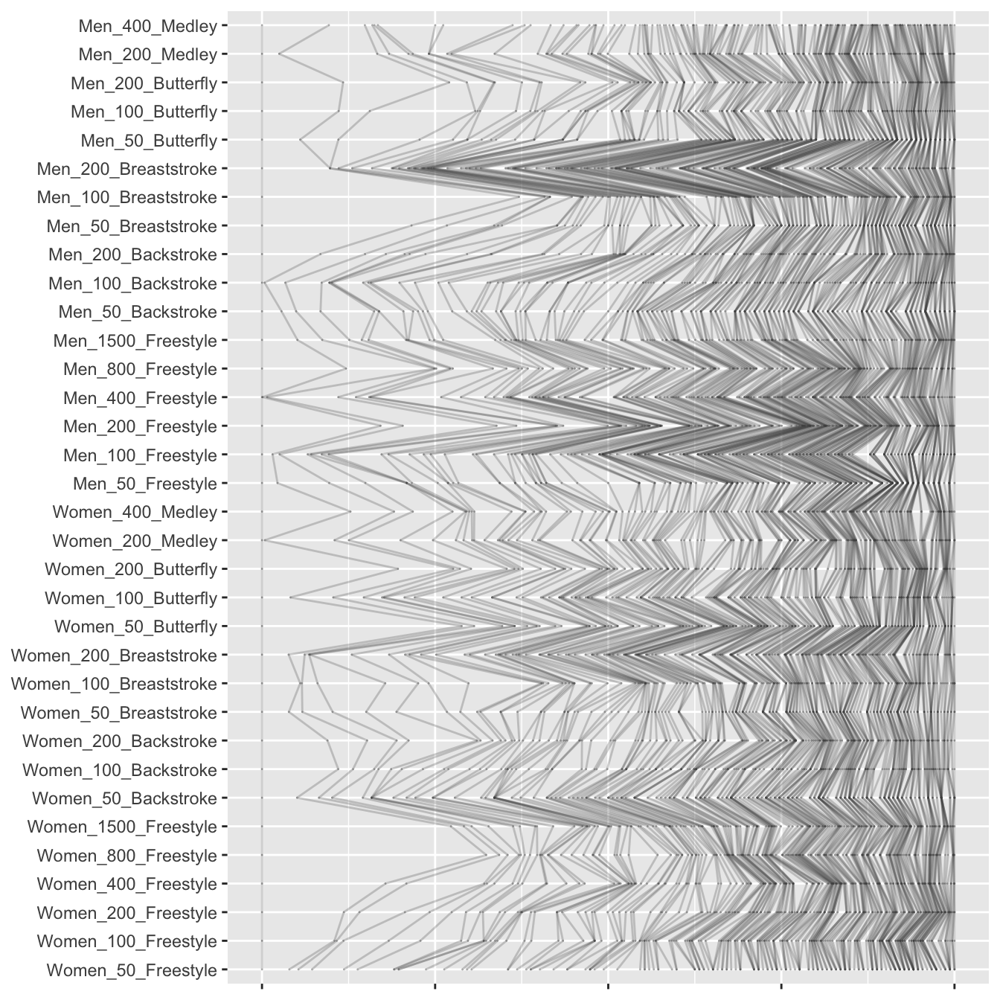
Figure 20.9: A parallel coordinate plot of the ranked times standardised by event across the individual events
The vertical line on the left represents the rescaled fastest times, i.e. the times of the top ranked swimmer in each event and the vertical line on the right represents the rescaled 200th time for each event. The variation to the left of the plot might be expected. Some world record performances are much faster than the second best performances. The order statistics only seem to become relatively equal near rank 200 at the right of the plot.
Possibly choosing a different common scaling and sorting the events by stroke and ordering by distance would be more informative. Sorting by the relative difference between the best two performances smooths the plot out a little, while confirming that the distribution of times for the men’s 200 m breaststroke is a bit different.
Code
All200q <- All200p %>% group_by(event) %>% arrange(SwimTime) %>% mutate(dx200=nth(SwimTime, 100) - min(SwimTime), Range=max(SwimTime)-min(SwimTime), aa=dx200/Range)
ax <- max(All200q$aa)
All200q <- All200q %>% mutate(stsw=(SwimTime-min(SwimTime))/Range, st1=1-(1-stsw)*(1-ax)/(1-aa))
All200qX <- All200q %>% select(event, st1, Rank_Order)
All200qX <- All200qX %>% ungroup() %>% mutate(event=fct_reorder(factor(event), st1, min))
All200qX <- All200qX %>% arrange(event)
All200qY <- All200qX %>% pivot_wider(names_from=event, values_from=st1)
All200qY %>% pcp_select(Men_50_Freestyle:Men_200_Breaststroke) %>% pcp_scale(method="raw") %>% ggplot(aes_pcp()) + geom_pcp_axes(colour="white") + geom_pcp(alpha=0.25) + geom_hline(yintercept=ax, colour="red") + ylab(NULL) + xlab(NULL) + theme(axis.text.x = element_blank()) + coord_flip()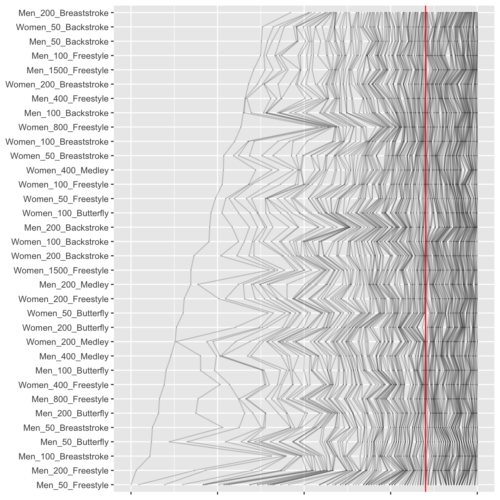
Figure 20.10: A parallel coordinate plot of the ranked times aligning the 100th ranks (the red line) across the individual events, sorted by relative fastest times
Another approach tried was to align the 100th rank performances for all events, scaling accordingly (the 200th rank performances remain aligned), and sorting events by the relative fastest times. This is shown in Figure 20.10. The 200 m breaststroke for men stands out as the relatively most compressed of the event time distributions. Wave-like patterns are apparent around events where the (relatively) biggest differences between the best and second-best times occur. A good example is the 100 m breaststroke for men, due to Adam Peaty’s performance, the third from the bottom of the plot. It is almost as far away from the 200 m breaststroke for men as it could be.
20.4 How do relay races compare with individual races?
There are three relay events for men and women, the 4x100 m medley and the 4x100 m and 4x200 m freestyle. The very best times for the relay events are better than the very best times for the comparable individual events.
Code
ir400 <- ggplot(All200 %>% filter(dist==400, style %in% c("Freestyle", "Freestyle Relay")), aes(sdate, SwimTime)) + geom_point(aes(colour=Style)) + xlab(NULL) + ylab("time (secs)") + theme(legend.title=element_blank(), axis.title.y = element_text(angle = 0, vjust = 0.5)) + facet_wrap(vars(Gender), nrow=1)
ir400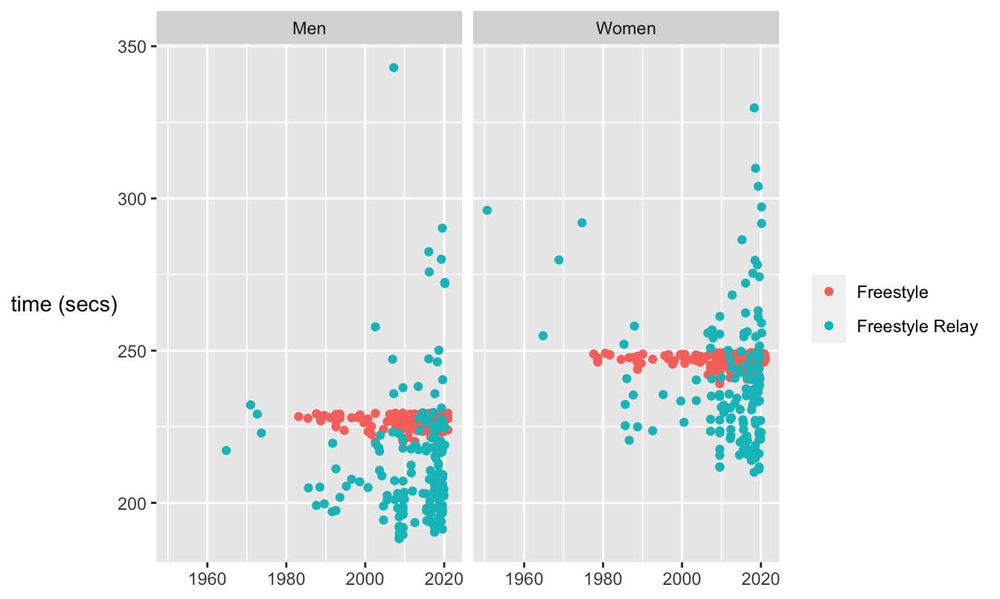
Figure 20.11: Best times for the 400 m freestyle events for men and women, individual (red) and relay (blue)
Best times are achieved by relay teams and not individuals over the same total distance, because each swimmer in a team swims only a quarter of the distance. In the medley event you can have a specialist for each of the four strokes. Individuals only have one diving start, but relay teams have three (in the medley) or four.
The high variability amongst relay times compared with individual times is because each country’s team is treated as one competitor. There is only one best time for each country, whether it is the USA or Togo. This also means that there are not 200 best times in the 4x100 m relay, just 168 for the men and 144 for the women, the numbers of countries who have had teams in those events. Countries which no longer exist (such as Yugoslavia and Rhodesia) are included, which is why there is even a best time for the 4x100 m freestyle relay for women from 1950!
20.5 How do countries compare?
The USA is currently the strongest swimming nation and that can be measured in a variety of ways. Instead of looking at that, consider the strengths of nations across the same events for men and women. Figure 20.12 plots the number of female swimmers of a country in the top 200 for an event against the number of male swimmers of that country in the same event. The graphs are shown for the nine countries with the most swimmers in all amongst the 200 best times for the 17 events for men and women.
Code
All200r <- All200x %>% unite("comp", c("distance", "Style"))
All200s <- All200r %>% group_by(Gender, comp, team_code) %>% summarise(nc=n())
All200sw <- All200s %>% pivot_wider(names_from=Gender, values_from=nc)
All200swC <- All200sw %>% ungroup() %>% group_by(team_code) %>% summarise(ttm=sum(Men, na.rm=TRUE), ttw=sum(Women, na.rm=TRUE), tta=ttm+ttw)
colblind4 <- c(colorblind_pal()(8), "grey60")
ggplot(All200sw %>% filter(team_code %in% c("USA", "JPN", "AUS", "RUS", "CHN", "CAN", "GER", "GBR", "ITA")), aes(Men, Women)) + geom_point(aes(colour=team_code)) + scale_colour_manual(values=colblind4) + geom_abline(slope=1, colour="brown", linetype="dashed") + coord_fixed() + facet_wrap(vars(team_code)) + xlim(0,55) + ylim(0,55) + theme(axis.title.y = element_text(angle = 0, vjust = 0.5)) + theme(legend.position="none")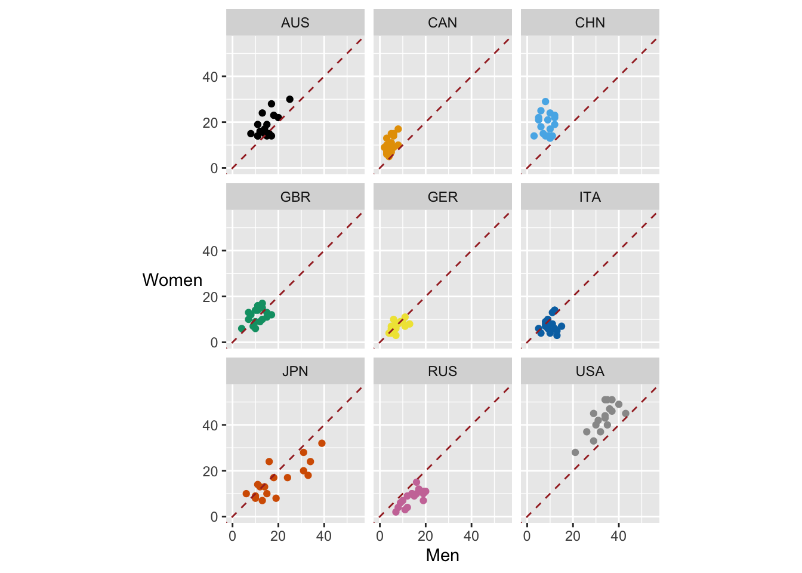
Figure 20.12: Numbers of female swimmers in the top 200 plotted against numbers of male swimmers in the top 200 for each of 17 events by country (the dashed lines represent equality)
The USA, Canada, and China have more female swimmers than male swimmers in the respective top 200’s in all events. Russia has more men than women in the top 200 lists in all events.
Answers Freestyle is fastest, then butterfly, backstroke, breaststroke. Backstroke catches up on butterfly over longer distances. The 200th fastest man is faster than the fastest woman in all four strokes. After full body swimsuits were banned it took several years to get near to the earlier records again.
Further questions How do the performances of individual swimmers develop over time? What effect do turns have on swimming performance? Comparing times over different pool lengths could be used to study the effect.